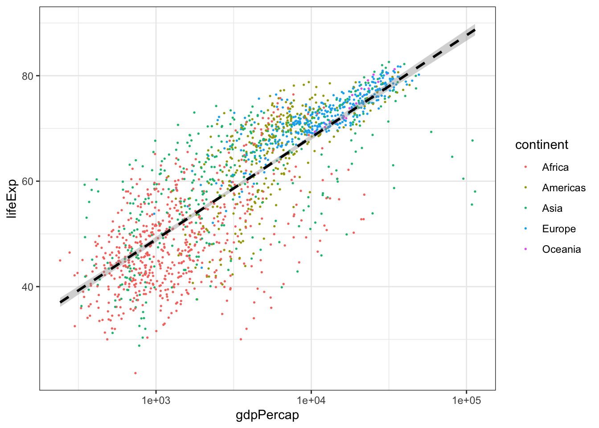
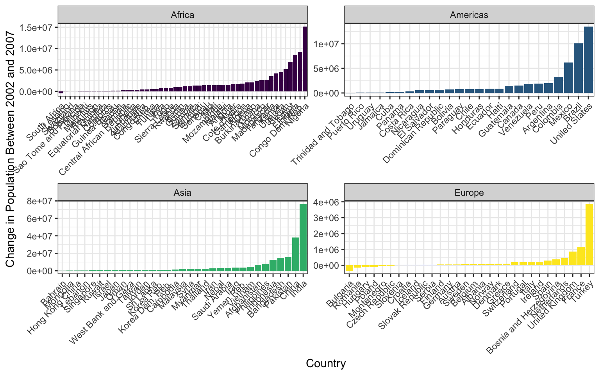

Labs are designed to reinforce the code/lessons covered that week and provide you a chance to practice working with GitHub. Labs are to be completed in your local project (on your computer) and pushed up to your GitHub repository for instructors to review by the following Wednesday. That said, these due dates are largely suggestive as a way to help you prioritize and stay caught up as a group – if you need, or want, more time, take it. At the end of the quarter, we will simply look over the tasks you have completed in concert with the reflection you submit.
This lab will help you get oriented with R, RStudio, and your first programming concepts. The goal is to practice the fundamentals covered in the the introduction to R and RStudio lecture.
Setup Instructions:
Open RStudio
Create a new R script by going to
File -> New File -> R Script or pressing
Ctrl/Cmd+Shift+N
Save your script as lab_week_1.R in an appropriate
location
As you work through the problems below, write your code in the
script and run it using Ctrl/Cmd+Enter (try to practice not
highlighting and clicking “run”)
Part 1: Basic Arithmetic and Order of Operations
Use parentheses to edit 15 + 7 * 3 force R to return
66 instead of 36.
Calculate the square root of 144.
Calculate 2 raised to the power of 8.
Part 2: Objects and Assignment
Create an object called current_year and assign a
value of 2025 to it using the <-
operator.
Calculate how many years it has been since 1977
using the current_year object.
Part 3: Mathematical Functions
Calculate the natural logarithm of 10 using the
log() function.
Calculate e raised to the power of 2 using the exp()
function.
Part 4: Logical Comparisons
Test whether 10 is equal to 5 + 5 using the ==
operator.
Test whether 7 is greater than 10.
Test whether 15 is greater than or equal to 15.
Create an object called x with the value 25, then
test whether x is not equal to 30.
Part 5: Exploring Functions and Getting Help
Use the help function to learn about the round()
function by typing ?round in the console.
Round the number 3.14159 to 2 decimal places using the
round() function.
Calculate the absolute value of -15 using the abs()
function.
Part 6: Working with Scripts
Add comments to your script using # to explain what
each section does.
Save your script and make sure you can run the entire script from top to bottom without errors.
In this lab we are going to practice subsetting and manipulating vectors.
First, open a new script in your workgin directory and save it to
your scripts folder. Call this new script
week_2_lab.
Copy and paste the chunk of code below into your new
week_2_lab script and run it. This chunk of code will
create the vector you will use in your lab today. Check in your
environment to see what it looks like. What do you think each line of
code is doing?
set.seed(15)
hw2 <- runif(50, 4, 50)
hw2 <- replace(hw2, c(4,12,22,27), NA)
hw2## [1] 31.697246 12.972021 48.457102 NA 20.885307 49.487524 41.498897
## [8] 15.682545 35.612619 42.245735 8.814791 NA 27.418158 36.504914
## [15] 43.666428 42.722117 24.582411 48.374680 10.494605 39.728776 40.971460
## [22] NA 20.447903 6.668049 30.024323 34.314318 NA 10.825658
## [29] 46.676823 25.913006 26.933701 15.810164 26.616794 9.403891 27.589087
## [36] 34.262403 9.591257 27.733004 17.877330 38.975078 46.102046 25.041810
## [43] 46.369401 15.919465 19.813791 23.741937 19.192818 38.630297 42.819312
## [50] 4.500130Take your hw2 vector and removed all the NAs then
select all the numbers between 14 and 38 inclusive, call this vector
prob1.
Multiply each number in the prob1 vector by 3 to
create a new vector called times3. Then add 10 to each
number in your times3 vector to create a new vector called
plus10.
Select every other number in your plus10 vector by
selecting the first number, not the second, the third, not the fourth,
etc. If you’ve worked through these three problems in order, you should
now have a vector that is 12 numbers long that looks
exactly like this one:
final## [1] 105.09174 57.04763 92.25447 83.74723 100.07297 87.73902 57.43049
## [8] 92.76726 93.19901 85.12543 69.44137 67.57845Finally, save your script and push all your changes to your github account.
Lab this week will be playing with the surveys data we
worked on in class. Create a new script in your scripts
folder called week_3_lab.R.
Load your survey data frame with the read.csv()
function. Create a new data frame called surveys_base with
only the species_id, the weight, and the plot_type columns. Have this
data frame only be the first 5,000 rows. Convert both species_id and
plot_type to factors. Remove all rows where there is an NA in the weight
column. Explore these variables and try to explain why a factor is
different from a character. Why might we want to use factors? Can you
think of any examples?
CHALLENGE: Create a second data frame called
challenge_base that only consists of individuals from your
surveys_base data frame with weights greater than 150g.
This week the lab will review data manipulation in the tidyverse.
Create a tibble named surveys from the
portal_data_joined.csv file.
Subset surveys using Tidyverse methods to keep rows
with weight between 30 and 60, and print out the first 6 rows.
Create a new tibble showing the maximum weight for each species +
sex combination and name it biggest_critters. Sort the
tibble to take a look at the biggest and smallest species + sex
combinations. HINT: it’s easier to calculate max if there are no NAs in
the dataframe…
Try to figure out where the NA weights are concentrated in the
data- is there a particular species, taxa, plot, or whatever, where
there are lots of NA values? There isn’t necessarily a right or wrong
answer here, but manipulate surveys a few different ways to explore
this. Maybe use tally and arrange
here.
Take surveys, remove the rows where weight is NA and
add a column that contains the average weight of each species+sex
combination to the full surveys dataframe.
Then get rid of all the columns except for species, sex, weight, and
your new average weight column. Save this tibble as
surveys_avg_weight.
Take surveys_avg_weight and add a new column called
above_average that contains logical values stating whether
or not a row’s weight is above average for its species+sex combination
(recall the new column we made for this tibble).
This week’s questions will have us practicing pivots and conditional statements.
Create a tibble named surveys from the
portal_data_joined.csv file. Then manipulate surveys to
create a new dataframe called surveys_wide with a column
for genus and a column named after every plot type, with each of these
columns containing the mean hindfoot length of animals in that plot type
and genus. So every row has a genus and then a mean hindfoot length
value for every plot type. The dataframe should be sorted by values in
the Control plot type column. This question will involve quite a few of
the functions you’ve used so far, and it may be useful to sketch out the
steps to get to the final result.
Using the original surveys dataframe, use the two
different functions we laid out for conditional statements, ifelse() and
case_when(), to calculate a new weight category variable called
weight_cat. For this variable, define the rodent weight
into three categories, where “small” is less than or equal to the 1st
quartile of weight distribution, “medium” is between (but not inclusive)
the 1st and 3rd quartile, and “large” is any weight greater than or
equal to the 3rd quartile. (Hint: the summary() function on a column
summarizes the distribution). For ifelse() and case_when(), compare what
happens to the weight values of NA, depending on how you specify your
arguments.
BONUS: How might you soft code the values (i.e. not type them in manually) of the 1st and 3rd quartile into your conditional statements in question 2?
For our week seven lab, we are going to be practicing the skills we
learned with ggplot during class. You will be happy to know that we are
going to be using a brand new data set called gapminder.
This data set is looking at statistics for a few different counties
including population, GDP per capita, and life expectancy. Download the
data using the code below. Remember, this code is looking for a folder
called data to put the .csv in, so make sure you have a
folder named data, or modify the code to the correct folder
name.
library(tidyverse)
gapminder <- read_csv("https://ucd-r-davis.github.io/R-DAVIS/data/gapminder.csv") #ONLY change the "data" part of this path if necessary## Rows: 1704 Columns: 6
## ── Column specification ───────────────────────────────────────
## Delimiter: ","
## chr (2): country, continent
## dbl (4): year, pop, lifeExp, gdpPercap
##
## ℹ Use `spec()` to retrieve the full column specification for this data.
## ℹ Specify the column types or set `show_col_types = FALSE` to quiet this message.Part A: Basic ggplot Skills
First calculates mean life expectancy on each continent. Then create a plot that shows how life expectancy has changed over time in each continent. Try to do this all in one step using pipes! (aka, try not to create intermediate dataframes)
Look at the following code and answer the following questions.
What do you think the scale_x_log10() line of code is
achieving? What about the geom_smooth() line of
code?
Challenge! Modify the above code to size the points in proportion to the population of the country. Hint: Are you translating data to a visual feature of the plot?
Hint: There’s no cost to tinkering! Try some code out and see what happens with or without particular elements.
ggplot(gapminder, aes(x = gdpPercap, y = lifeExp)) +
geom_point(aes(color = continent), size = .25) +
scale_x_log10() +
geom_smooth(method = 'lm', color = 'black', linetype = 'dashed') +
theme_bw()## `geom_smooth()` using formula = 'y ~ x'
Part B: Advanced ggplot Skills - Graph Recreation
For the second part of this lab, we’re going to be working on 2
critical ggplot skills: recreating a graph from a dataset
and googling stuff.
Our goal will be to make this final graph using the
gapminder dataset:

The x axis labels are all scrunched up because we can’t make the image bigger on the webpage, but if you make it and then zoom it bigger in RStudio it looks much better.
We’ll touch on some intermediate steps here, since it might take quite a few steps to get from start to finish. Here are some things to note:
To get the population difference between 2002 and 2007 for each country, it would probably be easiest to have a country in each row and a column for 2002 population and a column for 2007 population.
Notice the order of countries within each facet. You’ll have to look up how to order them in this way.
Also look at how the axes are different for each facet. Try
looking through ?facet_wrap to see if you can figure this
one out.
The color scale is different from the default- feel free to try out other color scales, just don’t use the defaults!
The theme here is different from the default in a few ways, again, feel free to play around with other non-default themes.
The axis labels are rotated! Here’s a hint:
angle = 45, hjust = 1. It’s up to you (and Google) to
figure out where this code goes!
Is there a legend on this plot?
This lesson should illustrate a key reality of making plots in R, one
that applies as much to experts as beginners: 10% of your effort gets
the plot 90% right, and 90% of the effort is getting the plot perfect.
ggplot is incredibly powerful for exploratory analysis, as
you can get a good plot with only a few lines of code. It’s also
extremely flexible, allowing you to tweak nearly everything about a plot
to get a highly polished final product, but these little tweaks can take
a lot of time to figure out!
So if you spend most of your time on this lesson googling stuff, you’re not alone!
Let’s look at some real data from Mauna Loa to try to format and
plot. These meteorological data from Mauna Loa were collected every
minute for the year 2001. This dataset has 459,769 observations for
9 different metrics of wind, humidity, barometric pressure, air
temperature, and precipitation. Download this dataset here. Save it to your
data/ folder. Alternatively, you can read the CSV directly
from the R-DAVIS Github:
mloa <- read_csv("https://raw.githubusercontent.com/gge-ucd/R-DAVIS/master/data/mauna_loa_met_2001_minute.csv")
Use the README file
associated with the Mauna Loa dataset to determine in what time zone the
data are reported, and how missing values are reported in each column.
With the mloa data.frame, remove observations with missing
values in rel_humid, temp_C_2m, and windSpeed_m_s. Generate a column
called “datetime” using the year, month, day, hour24, and min columns.
Next, create a column called “datetimeLocal” that converts the datetime
column to Pacific/Honolulu time (HINT: look at the lubridate
function called with_tz()). Then, use dplyr to calculate
the mean hourly temperature each month using the temp_C_2m column and
the datetimeLocal columns. (HINT: Look at the lubridate
functions called month() and hour()). Finally,
make a ggplot scatterplot of the mean monthly temperature, with points
colored by local hour.
In this assignment, you’ll use the iteration skills we built in the course to apply functions to an entire dataset.
Let’s load the surveys dataset:
surveys <- read.csv("data/portal_data_joined.csv")Next let’s load the Mauna Loa dataset from last week.
mloa <- read_csv("https://raw.githubusercontent.com/ucd-cepb/R-DAVIS/master/data/mauna_loa_met_2001_minute.csv")## Rows: 459769 Columns: 16
## ── Column specification ───────────────────────────────────────
## Delimiter: ","
## chr (2): filename, siteID
## dbl (14): year, month, day, hour24, min, windDir, windSpeed_m_s, windSteady,...
##
## ℹ Use `spec()` to retrieve the full column specification for this data.
## ℹ Specify the column types or set `show_col_types = FALSE` to quiet this message.Use the map function from purrr to print the max of each of the following columns: “windDir”,“windSpeed_m_s”,“baro_hPa”,“temp_C_2m”,“temp_C_10m”,“temp_C_towertop”,“rel_humid”,and “precip_intens_mm_hr”.
Make a function called C_to_F that converts Celsius to Fahrenheit. Hint: first you need to multiply the Celsius temperature by 1.8, then add 32. Make three new columns called “temp_F_2m”, “temp_F_10m”, and “temp_F_towertop” by applying this function to columns “temp_C_2m”, “temp_C_10m”, and “temp_C_towertop”. Bonus: can you do this by using map_df? Don’t forget to name your new columns “temp_F…” and not “temp_C…”!
Challenge: Use lapply to create a new column of the surveys dataframe that includes the genus and species name together as one string.